What's a sparse index?
Databases can typically store billions or even trillions of records and when it comes to data retrieval, it needs to be fast. In this post, we will learn about sparse indexes, which are specialized datastructures that help databases with efficient data retrieval.
Introduction
Note: Before you read on, to better understand database indexes thoroughly, I recommend that you read more about database indexes first.
Databases organize and store records and write them to disk as datafiles. When it comes to querying the data, we couldn't possibly know which file has the records matching a query unless we iterate through each and every datafile there is. So, how could we possibly know which datafile contains the records that we want?
This is the exact problem that database indexes intend to solve. A database index holds a pointer to the actual record in a datafile so that it's easy to locate the record.
Two common types of database indexes that you should know
There are two very common types of database indexes - dense and sparse database indexes. If there's a pointer to every record there is in a datafile, then that's known as a dense index. On the other hand, if there is a pointer for a block of records, then that's known as a sparse index.
In this article, we will discuss more about sparse indexes.
Sparse indexes
Sparse indexes skip storing a pointer to each and every record that's present in a database and only store pointer to a block of records and where that block is present on disk. This is called a sparse index.
For example, let's consider that a database that contains a student table with 1000 rows and fields id, name
and dob. To visualize a sparse index, let's assume that the records are physically stored on disk as blocks and
there are 5 entries per block. For 1000 database records, there will be 200 such blocks.
Now, if we were to create a sparse index on those 1000 records, we would get one index entry per block and only 200
index entries altogether.

On the other hand, if the index were to be a dense index, we would store one index entry per record. So, for 1000
records, we would have 1000 index entries.

Why use a sparse index?
From the above examples, you might have already observed that sparse indexes store 5x lesser entries to data than
dense indexes (200 entries vs 1000 index entries). Now, imagine if there are millions or even billions of records in
a database. Indexing each record would mean that dense indexes would consume 5x more space on disk (ignoring data
compression and other factors).
Disk space can quickly become a problem when you've got a lot of records to index. In such scenarios sparse indexes can come in handy.
Some calculations
Let's try to do some calculations on the space required to store index entries (pointers to actual data on disk).
For our example above, we can calculate the total space needed to store and index 1000 records. Let's assume that each record in the student table consists of the following:
id- 4 Bytesname- 50 Bytesdob- 8 bytes (assuming timestamp format)
Total size of each record: 4 + 50 + 8 = 62 Bytes.
For 1000 records: 62 Bytes * 1000 = 62,000 Byes ~ 62 KB
Assuming that we index by dob as illustrated in the example, each index entry would contain the following:
dob:4 Bytes- Block ID that references the location of the record on disk:
4 Bytes - Record Offset: Position of the record within that block:
4 Bytes
Total space occupied by each index entry: 4 + 4 + 4 = 12 Bytes
Space used by a sparse index
If there's a sparse index entry for every 5 records: 1000/5 = 200 index entries. Total space occupied by 200 index
entries: 200 * 12 Bytes = 2400 Bytes ~ 2.4 KB
Space used by a dense index
Since there's a index entry per record for dense index, for 1000 records, there would be 1000 index entries. Total
space occupied by 1000 index entries: 1000 * 12 Bytes = 12,000 Bytes ~ 12 KB
As you might be able to observe already, we are using 5x less space to index 1000 entries using a sparse index as
compared to a dense index.
Hidden costs of a sparse index
Extra disk reads
As much space as sparse indexes might be able to save, since the granularity of these indexes don't directly point to the exact location of a record on disk, additional disk reads are necessary to further do sequential reads on index entries to filter down and locate the matching records. This makes them less efficient than dense indexes as they point directly to where a given record is located on the disk which saves disk reads.
Increased search times
Since we need extra reads to disk, we consequentially spend more time searching for the records with in the block essentially increasing search times.
Complexity
There are certain types of queries where the sparse indexes might not work well. For instance, range queries. For range queries, we would need more disk I/O operations to scan records sequentially spanning different blocks leading to increased query time and complexity.
Summing up
To sum up, sparse indexes offer good flexibility when we need to trade between space and time. If disk space is limited or if there are trillions of entries in a database, and we can't afford to maintain an index entry for each and every record, then naturally sparse indexes are a great choice. For use cases where the number of records are small or disk space is abundant, and when we need to optimize for speed over space, we can use dense indexes.
I hope that this post was able to give you a high level overview about sparse indexes, their advantages, disadvantages and when to use them.